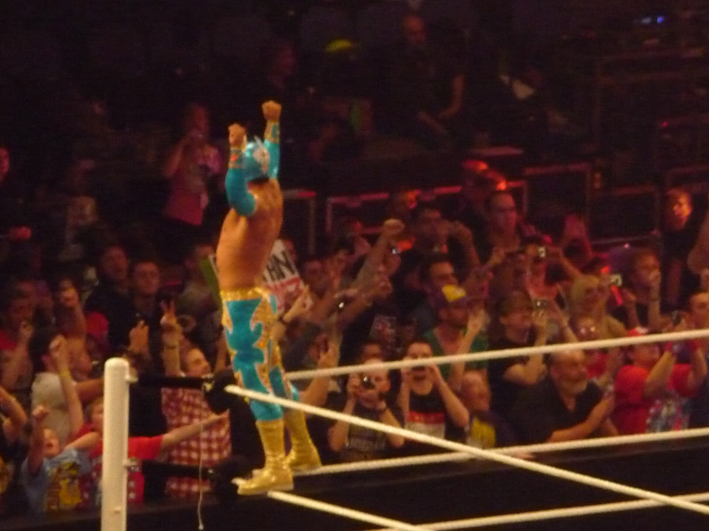
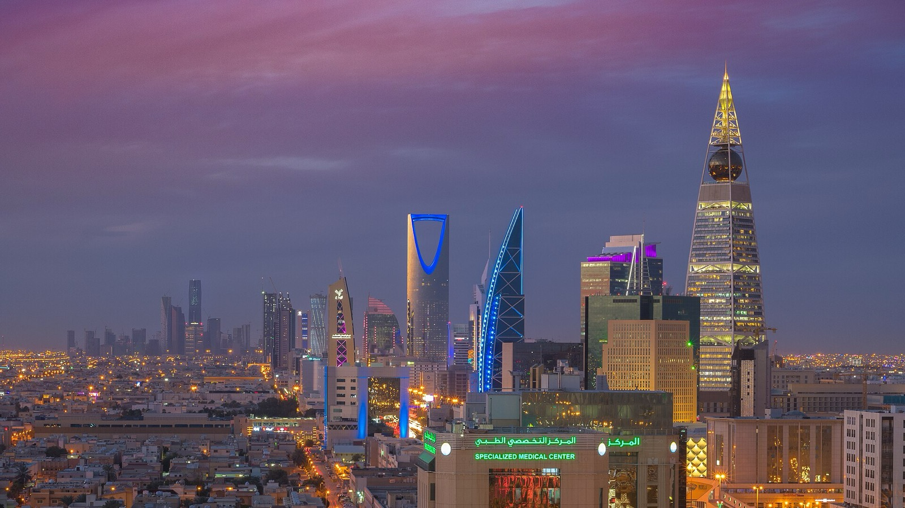
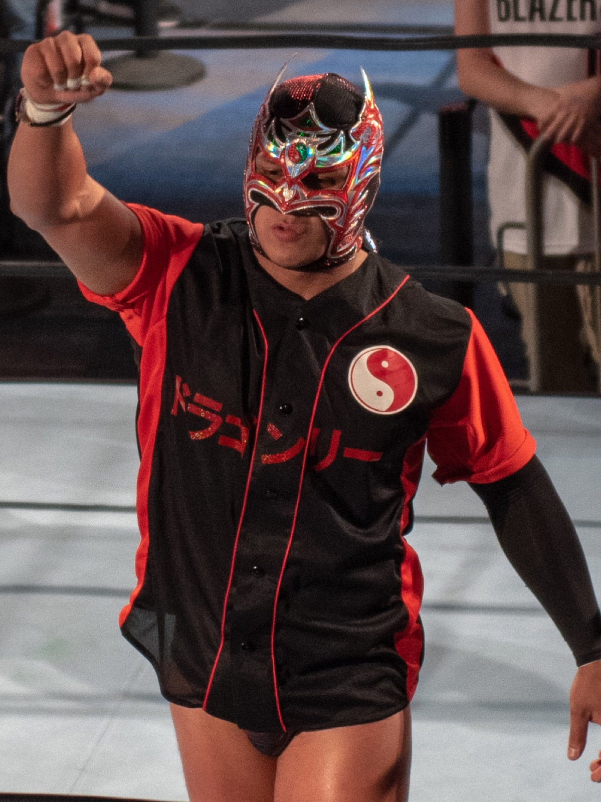
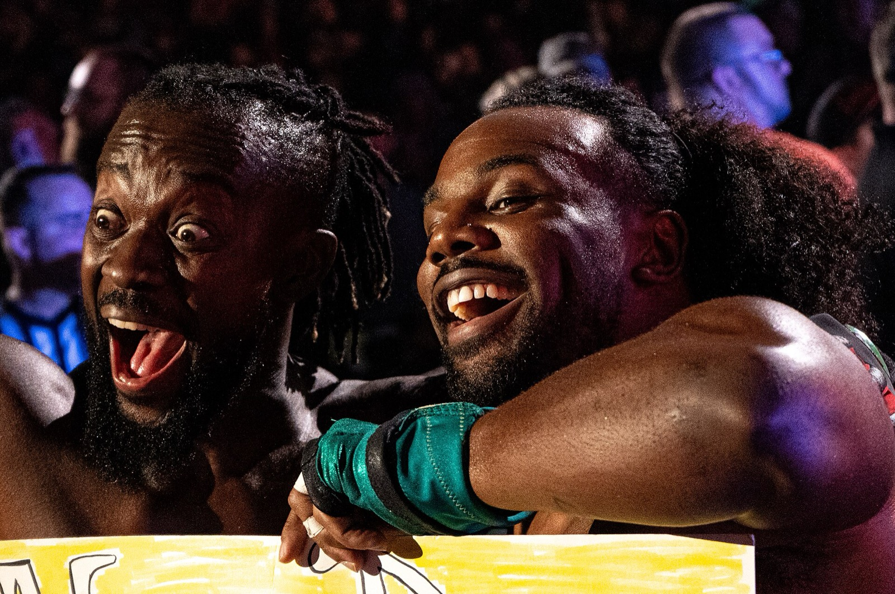
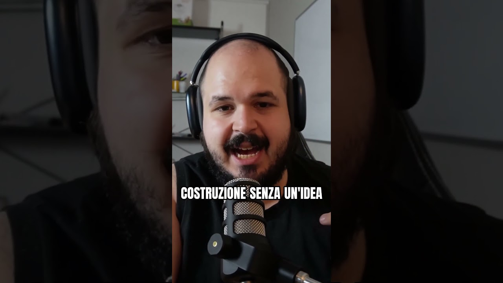
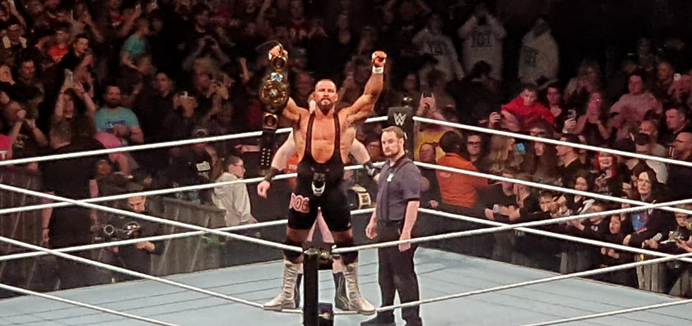

Rubrica
Flash News
Le notizie della settimana, dritte al punto: cosa è successo e cosa significa davvero.
Flash News è la rubrica delle notizie di wrestling in italiano: ogni settimana prendo le storie più importanti di WWE e le racconto senza giri di parole. Cosa è successo, cosa significa e cosa potrebbe succedere dopo, con la mia lettura quando serve.
Federazione
 Jon Moxley e AEW, la causa del tecnico resta in Michigan: no del giudice al trasferimento in FloridaFlash News23 ottobre 20262 min
Jon Moxley e AEW, la causa del tecnico resta in Michigan: no del giudice al trasferimento in FloridaFlash News23 ottobre 20262 min Chris Jericho sarà Gorgeous George nella serie su Muhammad Ali, The GreatestFlash News23 ottobre 20262 min
Chris Jericho sarà Gorgeous George nella serie su Muhammad Ali, The GreatestFlash News23 ottobre 20262 min Cody Rhodes: «Ho firmato il mio ultimo contratto». Altri 6-7 anni in WWEFlash News23 ottobre 20263 min
Cody Rhodes: «Ho firmato il mio ultimo contratto». Altri 6-7 anni in WWEFlash News23 ottobre 20263 min Edge si ritira? Adam Copeland annuncia: il 2027 sarà il suo ultimo annoFlash News23 ottobre 20263 min
Edge si ritira? Adam Copeland annuncia: il 2027 sarà il suo ultimo annoFlash News23 ottobre 20263 min Elly Finch firma con la WWE: dal getto del peso al Performance CenterFlash News23 ottobre 20262 min
Elly Finch firma con la WWE: dal getto del peso al Performance CenterFlash News23 ottobre 20262 min Jim Ross è tornato a casa dopo il ricovero in ospedaleFlash News23 ottobre 20262 min
Jim Ross è tornato a casa dopo il ricovero in ospedaleFlash News23 ottobre 20262 min Joe Hendry: «Posso essere un top draw per la WWE». E oggi esce Agent of ShadowsFlash News23 ottobre 20262 min
Joe Hendry: «Posso essere un top draw per la WWE». E oggi esce Agent of ShadowsFlash News23 ottobre 20262 min Raw del 2 novembre a mezzanotte in Italia: anticipa di due ore, è già nel palinsesto NetflixFlash News23 ottobre 20262 min
Raw del 2 novembre a mezzanotte in Italia: anticipa di due ore, è già nel palinsesto NetflixFlash News23 ottobre 20262 min Rumor: Rey Mysterio verso il ritiro nel 2027, secondo FightfulFlash News23 ottobre 20262 min
Rumor: Rey Mysterio verso il ritiro nel 2027, secondo FightfulFlash News23 ottobre 20262 min Ricky Sosa fermo per un grave infortunio alla schiena: l'annuncio della TNAFlash News23 ottobre 20262 min
Ricky Sosa fermo per un grave infortunio alla schiena: l'annuncio della TNAFlash News23 ottobre 20262 min Shayna Baszler firma con la TNA: ora è ufficialeFlash News23 ottobre 20262 min
Shayna Baszler firma con la TNA: ora è ufficialeFlash News23 ottobre 20262 min
Rumor: Sin Cara potrebbe tornare in WWE, con un nuovo voltoFlash News23 ottobre 20262 min SmackDown stasera, 23 ottobre 2026: card, orario italiano e dove vederloFlash News23 ottobre 20263 min
SmackDown stasera, 23 ottobre 2026: card, orario italiano e dove vederloFlash News23 ottobre 20263 min Rumor WarGames 2026: secondo Fightful la gabbia maschile sarà cinque contro cinqueFlash News23 ottobre 20262 min
Rumor WarGames 2026: secondo Fightful la gabbia maschile sarà cinque contro cinqueFlash News23 ottobre 20262 min AEW Blood & Guts 2026: Callis Family contro Team Ospreay, ecco le squadreFlash News22 ottobre 20263 min
AEW Blood & Guts 2026: Callis Family contro Team Ospreay, ecco le squadreFlash News22 ottobre 20263 min Perché gli arbitri del wrestling non vedono mai niente?Flash News22 ottobre 20263 min
Perché gli arbitri del wrestling non vedono mai niente?Flash News22 ottobre 20263 min I campioni WWE più giovani: il record di Brock Lesnar a 25 anniFlash News22 ottobre 20263 min
I campioni WWE più giovani: il record di Brock Lesnar a 25 anniFlash News22 ottobre 20263 min
Crown Jewel 2026, gli USA ritirano il personale dall'Arabia SauditaFlash News22 ottobre 20262 min
Dragon Lee rinnova con la WWE: il luchador resta a RawFlash News22 ottobre 20262 min El Desperado si ferma: stenosi spinale, salta la Super Jr. Tag LeagueFlash News22 ottobre 20262 min
El Desperado si ferma: stenosi spinale, salta la Super Jr. Tag LeagueFlash News22 ottobre 20262 min Il debutto di John Cena: la sconfitta contro Kurt Angle nel 2002Flash News22 ottobre 20263 min
Il debutto di John Cena: la sconfitta contro Kurt Angle nel 2002Flash News22 ottobre 20263 min
Secondo Fightful: New Level, contratto di cinque anni con l'AEWFlash News22 ottobre 20262 min
Perché la WWE fa tornare i wrestler dimenticati? Big Cass e gli altriFlash News22 ottobre 20264 min Cody Rhodes dopo la sconfitta con John Cena a WrestleMania 41: com'è andata e cosa è successo dopoFlash News21 ottobre 20263 min
Cody Rhodes dopo la sconfitta con John Cena a WrestleMania 41: com'è andata e cosa è successo dopoFlash News21 ottobre 20263 min Crown Jewel 2026 resta a Riyadh, per ora: aeroporto chiuso e allerte di viaggioFlash News21 ottobre 20263 min
Crown Jewel 2026 resta a Riyadh, per ora: aeroporto chiuso e allerte di viaggioFlash News21 ottobre 20263 min Ilja Dragunov, debutto sul ring AEW contro Mike Bailey a DynamiteFlash News21 ottobre 20263 min
Ilja Dragunov, debutto sul ring AEW contro Mike Bailey a DynamiteFlash News21 ottobre 20263 min Ludwig Kaiser, il giudice respinge la richiesta di archiviazione: il caso va avantiFlash News21 ottobre 20262 min
Ludwig Kaiser, il giudice respinge la richiesta di archiviazione: il caso va avantiFlash News21 ottobre 20262 min NWE Wrestling Legends Tour 2026: date, card e biglietti in ItaliaFlash News21 ottobre 20263 min
NWE Wrestling Legends Tour 2026: date, card e biglietti in ItaliaFlash News21 ottobre 20263 min RUSH, il visto è scaduto: niente AEW fino al 2027?Flash News21 ottobre 20263 min
RUSH, il visto è scaduto: niente AEW fino al 2027?Flash News21 ottobre 20263 min Il tradimento della Vision a Seth Rollins: il vero motivo era l'infortunioFlash News21 ottobre 20263 min
Il tradimento della Vision a Seth Rollins: il vero motivo era l'infortunioFlash News21 ottobre 20263 min Shotzi firma con la TNA: è ufficiale il ritornoFlash News21 ottobre 20262 min
Shotzi firma con la TNA: è ufficiale il ritornoFlash News21 ottobre 20262 min Wrestling in Italia questo weekend: ICW La Numero Uno e SIW ColossalFlash News21 ottobre 20263 min
Wrestling in Italia questo weekend: ICW La Numero Uno e SIW ColossalFlash News21 ottobre 20263 min Gunther è sprecato? Dal ritiro di AJ Styles ai siparietti con DanhausenFlash News20 ottobre 20264 min
Gunther è sprecato? Dal ritiro di AJ Styles ai siparietti con DanhausenFlash News20 ottobre 20264 min Carmelo Hayes nei 946: il licenziamento era tutto un pianoFlash News19 ottobre 20263 min
Carmelo Hayes nei 946: il licenziamento era tutto un pianoFlash News19 ottobre 20263 min
Bron Breakker, brutta caduta di collo in un live event WWE: come staFlash News18 ottobre 20263 min Penta e il Money in the Bank 2026: non doveva vincere lui, ecco cosa ha cambiato i pianiFlash News18 ottobre 20264 min
Penta e il Money in the Bank 2026: non doveva vincere lui, ecco cosa ha cambiato i pianiFlash News18 ottobre 20264 min Cody Rhodes tira il punt kick a Baron Corbin davanti a Randy OrtonFlash News17 ottobre 20264 min
Cody Rhodes tira il punt kick a Baron Corbin davanti a Randy OrtonFlash News17 ottobre 20264 min Seth Rollins è sparito: cosa sta succedendo davveroFlash News14 ottobre 20262 min
Seth Rollins è sparito: cosa sta succedendo davveroFlash News14 ottobre 20262 min Naomi sta per tornare, e credo di sapere quandoFlash News14 ottobre 20262 min
Naomi sta per tornare, e credo di sapere quandoFlash News14 ottobre 20262 min
Nessun articolo con questi filtri. Prova la ricerca completa.